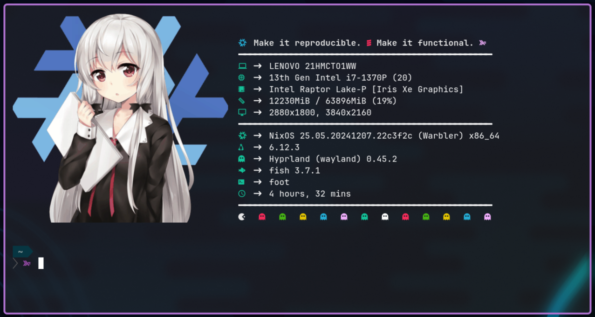

Home Manager: dotfiles management
What is Home Manager?
Quoting the official description Home Manager:
This project provides a basic system for managing a user environment using the Nix package manager together with the Nix libraries found in Nixpkgs. It allows declarative configuration of user specific (non-global) packages and dotfiles.
Wait a minute! If you had been following my blog for a while, you know a lot has been written about Home Manager already, so why am I going back to basics? Mainly because I noticed plenty of confusion out in the wild, thus I would like to demystify some of the misconceptions that exist, and provide you with ideas and examples so that you can reap the benefits of this magnificent tool.
Nix is hard
Let’s start by setting the record straight: Nix has an incredible steep learning curve. There are no shortcuts to getting productive with it, though, it very much pays off in the end.
Learning Nix compares to learning functional programming coming from an object-oriented / primitive programming background. Your brain needs to be rewired. You are now dealing with immutable data structures that go as far as the operating system — if you dare swimming in NixOS waters.
So yes, Nix is hard, but it’s all worth it once it clicks. However, you can’t expect to fully grasp it without committing 100%. Nix requires you to go all the way in. Failure to do so may quickly lead you into an inevitable outburst of rage and frustration against it.
So keep that in mind if you’re only taking your first steps with Nix and Home Manager 😁
Use cases
Home Manager can be used incrementally. It is not necessary to use its every feature all at once. My recommendation is to progress with the tool by taking smaller steps instead, for which I think the following ordered list of features is a good start right after you install it.
- Software installation.
- Declarative programs.
- Declarative services.
- Dotfiles management.
- Overlays, overrides, and custom modules.
- Full desktop management.
Get familiar with each step as you move forward. Don’t rush trying to understand everything in one go as that can quickly become a very daunting task, so take your time learning how things work.
This is more or less the path I have taken with it, but the cool thing is that it can be used in a sort of mix-and-match fashion. For instance, you can only use it to install packages (1) and run services (3), or to install declarative programs (2) and override some packages (6), and so on.
Software installation
Installing software from nixpkgs — the largest and most up-to-date package repository in the entire universe — is arguably the simplest use case.
{
home.packages = with pkgs; [
chromium # browser
nemo # file manager
reaper # digital audio workstation (DAW)
];
}That’s all it takes to install these three packages with default settings.
A lot of them may require custom configuration, which are part of the so-called “dotfiles”. In the last few sections of this post, we’ll learn how to efficiently manage them via Home Manager. Until then, it is recommended that you manage them as you would without it.
Pro tips
- Head over to search.nixos.org/packages to search for a given package.
- Use nix-search from your terminal if you don’t like Web UIs.
- Alternatively,
nix search nixpkgs <package-name>also works, albeit being much slower.
- Alternatively,
- nix-index is a good alternative to
command-not-found(invoked when you mistype a command).
Declarative programs
Programs bring the NixOS module system into Home Manager, making it extremely easy and safe to install software declaratively, e.g.
{ pkgs, ... }:
{
programs.foot = {
enable = true;
server.enable = false;
settings = {
main = {
shell = "${pkgs.fish}/bin/fish";
font = "JetBrainsMono Nerdfont:size=10";
pad = "12x12";
dpi-aware = "yes";
selection-target = "both";
};
colors = {
alpha = 0.5;
};
};
};
}This configuration installs the Foot terminal emulator by generating the right configuration file (dotfile) based on the given settings. You don’t need to worry about whether the software needs a YAML or TOML file in a specific directory — it’s all Nix as far as we are concerned.
Pro tips
- Head over to Home Manager configuration options to find out the program’s settings.
In cases where further customization is needed for a package, we have a few options:
- Install it via
home.packages(1) and do proper dotfiles management (4). - Write a custom module similar to the original one that does what we need.
- Upstream a PR if you can allow the time and think other users can benefit. It’s OSS after all 😊
Declarative services
When a program needs to run as a daemon with certain permissions, a declarative service is what we need, which on Linux are supported via systemd.
Examples of services include databases (PostgreSQL), analytics (Plausible), notification daemon (Dunst), etc. For instance, here’s my declarative configuration for udiskie: automounter for removable media.
{ pkgs, ... }:
{
services.udiskie = {
enable = true;
automount = true;
notify = true;
settings = {
program_options = {
file_manager = "${pkgs.mimeo}/bin/mimeo";
};
};
tray = "always";
};
}The same caveats regarding customizations described for programs apply here as well.
Pro tips
- Services are also documented in the Home Manager configuration options site.
When in need of a custom service that’s not available upstream, it’s always useful to look at source code examples to understand how we can create our own. For instance, here’s the code for dunst service. You can land at it directly from the configuration options site, it’s all linked there.
Dotfiles management
This is where I’ve seen the biggest confusion when using Home Manager, so let’s have a deeper look at the options we have when it comes to managing dotfiles.
To make things easier to follow, we are going to look at a concrete example: installing neofetch.
Side note: neofetch is highly customizable and still works flawlessly, even if it’s now archived and there are alternatives such as hyfetch and fastfetch.
Most people would start with something like this:
{ pkgs, ... }:
{
home.packages = [ pkgs.neofetch ];
xdg.configFile."neofetch/config.conf".source = ./neofetch.conf;
# alternatively, one could write the configuration inline as follows
# xdg.configFile."neofetch/config.conf".text = '' #content here '';
}Where neofetch.conf is your standard configuration file.
However, this means that the actual dotfile used by the software that lives under ~/.config/neofetch/config.conf now belongs to Home Manager and you don’t have write permissions.
$ readlink -f ~/.config/neofetch/config.conf
/nix/store/21h3kkyipjdcsgv72vbd2i1h6vzcl0pk-hm_electric.conf
$ ls -la /nix/store/21h3kkyipjdcsgv72vbd2i1h6vzcl0pk-hm_electric.conf
.r--r--r-- 17k root 1 Jan 1970 /nix/store/21h3kkyipjdcsgv72vbd2i1h6vzcl0pk-hm_electric.confThe only way to make changes is by modifying your Nix configuration, running home-manager switch ⏳, and hoping that the changes you made were correct. Otherwise, it’s rinse and repeat, which is less than ideal when you’re tinkering around with dotfiles and want to tweak little things.
This begs the question: Is Home Manager the wrong tool for managing dotfiles? I guess most deserters found themselves at this crossroad at some point, so let’s find out more.
Light at the end of the tunnel
Let me introduce you to the unsung hero: mkOutOfStoreSymlink — a simple function hidden in plain sight deep in the Home Manager source code, defined as follows:
lib.file.mkOutOfStoreSymlink = path:
let
pathStr = toString path;
name = hm.strings.storeFileName (baseNameOf pathStr);
in
pkgs.runCommandLocal name {} ''ln -s ${escapeShellArg pathStr} $out'';It’s heavily under-documented, which doesn’t make things easier for beginners, so that’s something we should improve within the Nix community, but I hope this blog post is a good start.
So, how does it help? Let’s get back to the neofetch example and refactor it to use this function.
{ pkgs, lib, config, ... }:
let
filePath = "/home/gvolpe/workspace/nix-config/programs/neofetch/electric.conf";
configSrc = config.lib.file.mkOutOfStoreSymlink filePath;
in
{
home.packages = [ pkgs.neofetch ];
xdg.configFile."neofetch/config.conf".source = configSrc;
}After one last home-manager switch run, let’s now check the dotfile symlink target:
$ readlink -f ~/.config/neofetch/config.conf
/home/gvolpe/workspace/nix-config/home/programs/neofetch/electric.confSuccess! 💪 For the curious reader, this is not a direct symlink; it’s a chain of symlinks.
$ readlink ~/.config/neofetch/config.conf
/nix/store/qxvvj5v1w8za9wfb80cnl6g5ja7w9qzz-home-manager-files/.config/neofetch/config.conf
$ readlink /nix/store/qxvvj5v1w8za9wfb80cnl6g5ja7w9qzz-home-manager-files/.config/neofetch/config.conf
/nix/store/d0cmjnz9advx1irqq1c6slrl0gjklipf-hm_electric.conf
$ readlink /nix/store/d0cmjnz9advx1irqq1c6slrl0gjklipf-hm_electric.conf
/home/gvolpe/workspace/nix-config/home/programs/neofetch/electric.conf
$ ls -la /home/gvolpe/workspace/nix-config/home/programs/neofetch/electric.conf
.rw-r--r-- 17k gvolpe 16 Dec 21:44 /home/gvolpe/workspace/nix-config/home/programs/neofetch/electric.confWe can now tweak our dotfiles as much as we want without Home Manager getting in the way. Once we’re happy with the results, we may want to go back to the immutable version (or not).
It’s worth noticing that even if we decide to keep the mutable version, the dotfiles that we modify can still be versioned in our git repository, as it is the case with the neofetch example.
A good declarative alternative could be impermanence, which goes deep into handling persistent state, but it may be an over-killer solution if you’re only after dotfiles management.
Pro tips
Can we do better? Certainly! We can leverage custom Home Manager modules, which may seem an advanced feature at first, but it’s a trivial concept once it clicks.
Examples always go a long way, so let’s dive right into it and define a new module named dotfiles.nix.
{ config, lib, ... }:
{
options = {
dotfiles = {
mutable = lib.mkEnableOption "mutable dotfiles";
path = lib.mkOption {
type = lib.types.path;
apply = toString;
default = "${config.home.homeDirectory}/workspace/nix-config/home";
example = "${config.home.homeDirectory}/.dotfiles";
description = "Location of the dotfiles working copy";
};
};
};
}It consists of two different options:
mutable: a boolean flag that dictates whether we choose to build our entire Home Manager configuration viamkOutOfStoreSymlinkor as usual (the immutable version).path: the path where you keep your dotfiles working copy.
The latter has a default value that points to where I keep my dotfiles, which is also a git repository. We’ll come back to this bit later on when we compare it to other solutions.
This module can then be imported in the Home Manager configuration modules and we should be able to use it as any other module, such as home.packages and other options.
The main piece of Home Manager configuration would look something like this now:
{
homeConfigurations."username" = home-manager.lib.homeManagerConfiguration {
inherit pkgs;
modules = [
./dotfiles.nix
./home.nix
{ dotfiles.mutable = true; }
];
};
}We are now able to utilize this information in our neofetch configuration (and anywhere else too):
{ pkgs, lib, config, ... }:
let
filePath = "${config.dotfiles.path}/programs/neofetch/electric.conf";
configSrc =
if !config.dotfiles.mutable then ./electric.conf
else config.lib.file.mkOutOfStoreSymlink filePath;
in
{
home.packages = [ pkgs.neofetch ];
xdg.configFile."neofetch/config.conf".source = configSrc;
}The first thing we do is to evaluate the dotfiles.mutable flag: if it’s set to false, we import the configuration file into the Nix store; otherwise, we fallback to the mkOutOfStoreSymlink function.
I was previously passing these values via specialArgs, but I think having a dedicated dotfiles module is a much better solution, inspired by this Github comment.
Comparison
In a nutshell, relying on mkOutOfStoreSymlink ends up being comparable to managing your dotfiles with tools such as GNU stow or chezmoi if we look exclusively at dotfiles management.
To understand whether using Home Manager for this is for you or not, we also need to look at what else it has in store for us, which goes back to leveraging the power of Nix.
For instance, here are a few things we can easily achieve with Nix+HM that would be much harder with primitive stateful solutions. Following the neofetch example, we could:
- Enable image support.
- Override specific version.
- Build with different compiler flags.
- Guarantee reproducibility across machines.
Enabling image support is something I worked on recently using the foot terminal emulator on Hyprland, which supports image rendering via the Sixel protocol. Here’s all I had to do:
{ pkgs, lib, config, ... }:
let
neofetchPath = lib.makeBinPath (with pkgs; [ chafa imagemagick ]);
neofetchSixelSupport = pkgs.neofetch.overrideAttrs (old: {
postInstall = ''
wrapProgram $out/bin/neofetch --prefix PATH : ${neofetchPath}
'';
});
in
{
home.packages = [ neofetchSixelSupport ];
xdg.configFile."neofetch/config.conf".source = configSrc;
}It adds the necessary dependencies (chafa and imagemagick) to the PATH of neofetch, without making them globally available. It really doesn’t get any easier than this!

Strictly speaking about dotfiles management with Home Manager, the main benefit is the ability to freeze or lock our files to make them reproducible in other machines, or also to serve as a reproducible snapshot in time if we ever want to get back to that specific version.
Switching back and forth between the immutable and mutable versions becomes an easy task with the dotfiles module. Nonetheless, one has to invest time in the initial configuration to get to this point.
Here’s how I switch between the two on my machine.
$ home-manager switch --flake .#homeConfigurations.hyprland-hdmi.activationPackage
$ home-manager switch --flake .#homeConfigurations.hyprland-hdmi-mutable.activationPackageIf you understand all I wrote about it so far and still choose another solution like Stow, fair enough, it’s a great tool! Moreover, it can be combined with Home Manager; you can manage your dotfiles with Stow, and still take advantage of all the other features such as overlays/overrides and modules.
Feel free to dig into my Nix configuration files for more and leave any questions / comments here.
Closing remarks
Home Manager rocks! 🤘 I hope you find this article useful and give yourself time to learn these tools the proper way. With the right amount of patience and dedication, you’ll become productive soon enough.
Last but not least, I would like to use this space to thank Robert Helgesson for his invaluable work on Home Manager since its inception. It certainly takes considerable devotion to carry on with maintaining this project after so many years! 🙇
Best, Gabriel.